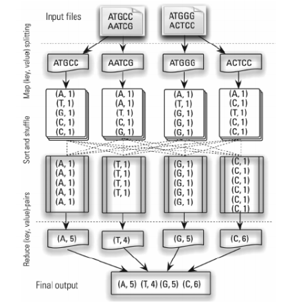
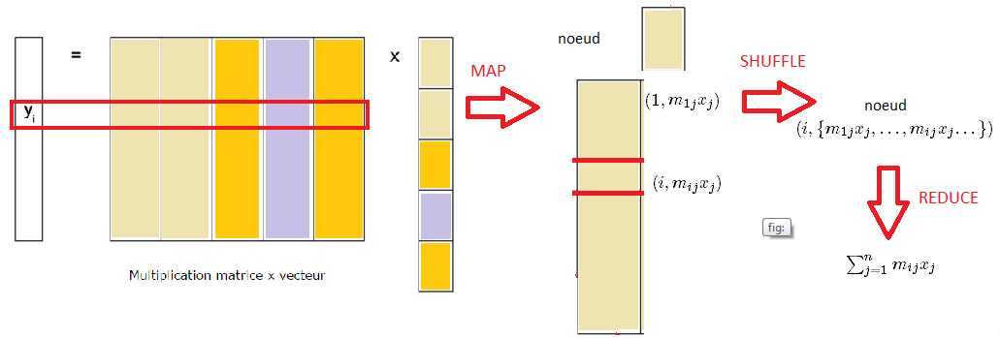

À la base des systèmes dits « big data », il y a un principe central : la distribution, à la fois des données et des traitements, sur un ensemble de machines/ordinateurs formant un cluster. Le stockage des données brutes s’appuie le plus souvent sur un système de fichiers distribués. MapReduce est la première implémentation pour les big data du principe de parallélisation des traitements appliquée aux fichiers distribués. Il repose sur deux fonctions principales, map et reduce, qui sont appliquées parfois à de multiples reprises.
La première décrit une transformation que l’on applique aux valeurs d’une collection de données au format clé / valeur ; la deuxième applique une opération à toutes les valeurs d’une même clé. Prenons l’exemple du dénombrement des nucléotides composant un brin d’ADN : « AGTCGGGGCT ». L’objet en entrée est donc une séquence, et on souhaite obtenir en sortie une table avec les différents symboles et le nombre d’occurrences de chacun d’entre eux dans la séquence initiale. La démarche « naturelle » consiste à prendre le premier symbole de la séquence, de noter dans la table de sortie son nom et d’initialiser un compteur à 1, puis de revenir à la séquence, d’identifier le second et s’il correspond au premier, d’incrémenter le compteur correspondant… Cette démarche est assez simple à décrire, mais demande en pratique de parcourir tout ou partie de la séquence à chaque itération. Cela n’est pas problématique si la séquence est aussi élémentaire que celle prise dans cet exemple… mais le devient si elle correspond au génome humain, constitué de quelques milliards de nucléotides (symboles). De la même manière et pour utiliser un exemple plus classique pour un statisticien, filtrer une table selon la valeur des attributs d’une variable est une opération a priori simple et classique, mais dont la mise en œuvre pour des très grands volumes peut s’avérer particulièrement inefficace voire impossible..
La même opération réalisée en MapReduce, correspond aux opérations suivantes : lors du chargement des données, la séquence a été coupée en plusieurs sous-séquences chargées sur différentes machines ou nœuds ; la première étape (map) consiste alors à appliquer au niveau de chaque noeud une fonction dont le résultat est une liste de couples constitués chacun d’une clé et d’une valeur. Ici, la clé correspond au symbole lu, et la valeur à l’occurrence 1 : on a donc une liste de couples (A,1), (G,1), (T,1), (A,1),.. Dans une deuxième étape de triage (« shuffling and sorting »), on rassemble sur un même nœud toutes les paires correspondant à une même clé. Finalement, on applique une fonction d’agrégation (reduce) qui combine (ici on somme tout simplement) les valeurs correspondantes à chaque clé. On aboutit dans cet exemple à quatre paires constituées d’un symbole et du nombre d’occurrences de ce symbole sur l’ensemble de la séquence.
 Source: Statistique et Big Data Analytics Volumétrie – L’Attaque des Clones
Autre exemple plus traditionnel en économétrie, la multiplication d’une très grosse matrice M avec un vecteur x : on pourra répartir les colonnes de la matrice sur différents nœuds et procéder localement à la multiplication de ces colonnes avec les composantes correspondantes de x, avant d’agréger le résultat final.

Des outils ont rapidement été construits pour rendre l’écriture des programmes MapReduce plus transparente pour l’utilisateur. Hive, une des solutions les plus populaires, propose d’écrire ces programmes en SQL, comme on le ferait pour manipuler les données d’une base relationnelle classique. Ce modèle de programmation permet également d’appliquer efficacement sur un très grand volume de données toute une gamme d’algorithmes. Il existe cependant un certain nombre de limites à ce modèle : la nature même des étapes map et reduce ne permet pas facilement la mise en œuvre d’algorithmes itératifs en particulier pour certains choix d’architecture (après chaque opération map ou reduce, Hadoop MapReduce écrit les résultats intermédiaires sur disque, ces résultats étant ensuite lus si nécessaires, ce qui entraîne d’importants temps d’exécution). La solution Spark propose des performances supérieures (jusqu’à cent fois plus rapide lorsqu’il travaille en mémoire vive) grâce à un certain nombre d’innovations par rapport au modèle historique. En effet, si Spark conserve un modèle d’exécution distribué sa capacité à opérer bien plus souvent en mémoire vive lui permet de gagner en rapidité d’exécution par opposition aux lectures écritures systématiques du modèle Hadoop. Plus précisément, Spark garde en mémoire le maximum de résultats intermédiaires, ainsi que l’historique des opérations. En cas de panne, les opérations seront effectuées à nouveau, ce qui reste moins coûteux que les écritures/lectures systématiques.